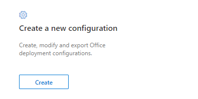
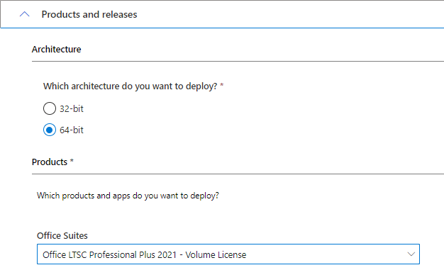
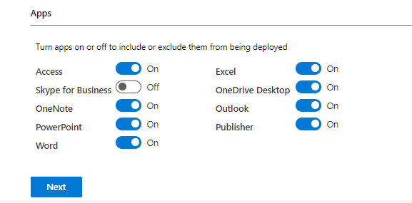
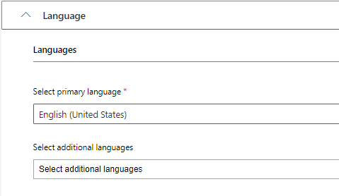
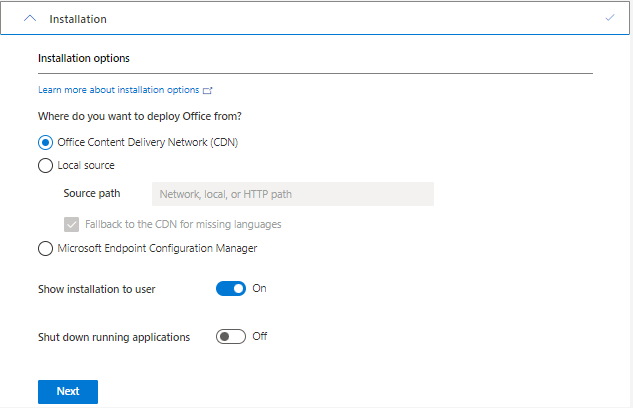
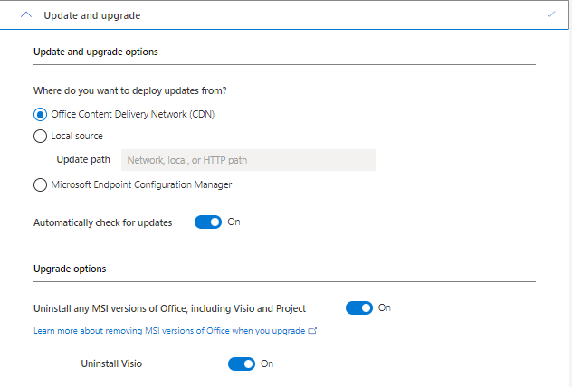
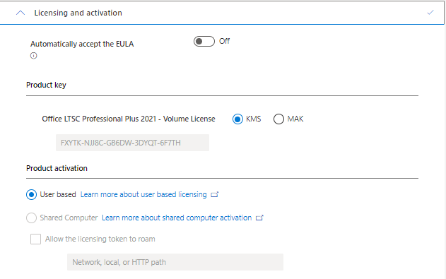
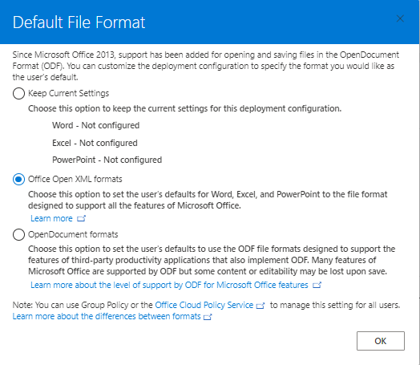
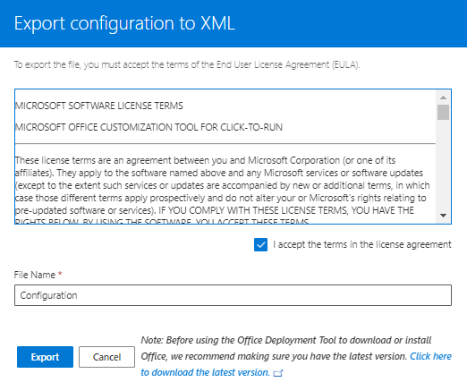
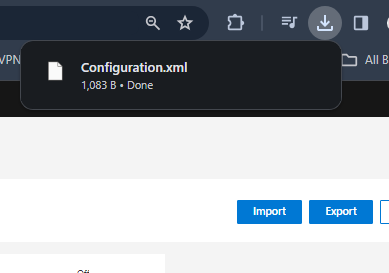

Microsoft Office is a suite of productivity software developed by Microsoft for Windows and macOS operating systems.
This page is for those who want to download the latest genuine version of Microsoft Office 2021.
Microsoft Office is a collection of productivity software that includes word processing and data management applications like Word, Excel, and PowerPoint.
First, open the Office Customization Tool and click the create button.

In the Products and releases tab, select Architecture 64bit. From office suites choose Office LTSC Professional Plus 2021 - Volume License.

Now go to the apps section and select packages as needed.

Click next, open the Language tab, select your language, and continue.

Keep the remaining settings as they are and click next.

Disable Uninstall any MSI versions of Office, including Visio and Project in the Update and Upgrade section, then click next.

In Licensing and activation, select KMS and click next.

In General leave it blank, click next, then in Application preferences click Finish. In the Export dialog choose Office Open XML formats and click OK.

Accept the license agreement and click Export.

You should now have the configuration file downloaded successfully.
